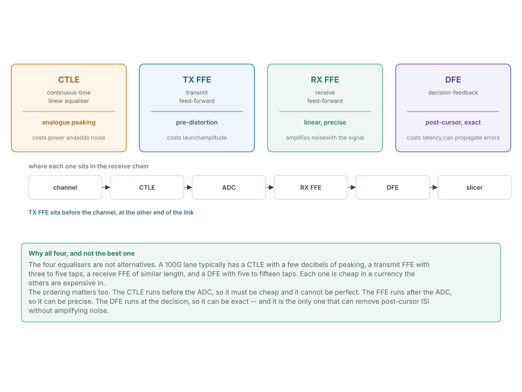
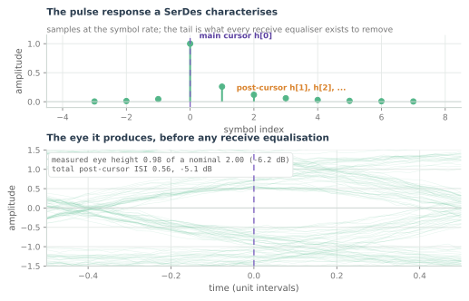
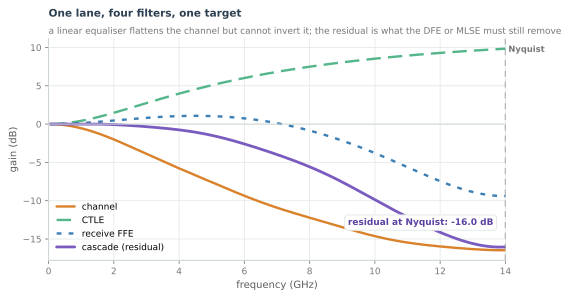
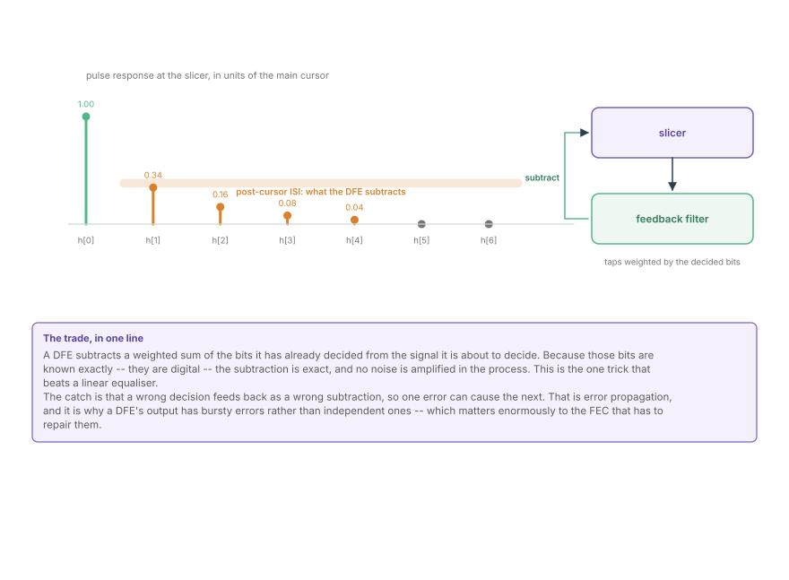
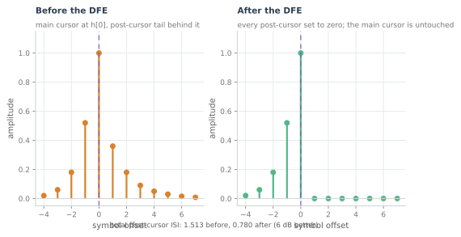

SerDes Equalisation
CTLE, transmit FFE, receive FFE and DFE, what each one costs, and why a real link uses all four at once rather than choosing between them.
A receiver with no equaliser sees what the channel leaves, and at 26 GHz that is not much. The previous chapter's pulse response is the whole problem in one picture: a main cursor, a smear of energy either side of it, and a decision threshold that has to be placed somewhere in between. Equalisation is the business of removing that smear, and a real lane uses four different tools to do it.
This chapter is about which tool does what, what each one costs, and why a design uses all four rather than picking the best one.
Four filters, four currencies

The figure is the chapter's summary, and the column that matters is the cost.
| Equalser | Where it sits | What it removes | What it costs |
|---|---|---|---|
| CTLE | analogue, before the sampler | broad high-frequency loss | power, and added noise |
| TX FFE | transmit, before the channel | pre-cursor and post-cursor ISI | launch amplitude |
| RX FFE | digital, after the sampler | both cursors, precisely | noise gain, and ADC resolution |
| DFE | at the decision | post-cursor ISI, exactly | latency, and error propagation |
No single one of them is sufficient. The CTLE cannot be precise because it is analogue and untuned. The transmit FFE is limited by the driver's swing. The receive FFE amplifies noise along with signal. The DFE cannot correct a pre-cursor at all, because at the moment of the decision the future symbol has not been decided. Together they cover each other's weaknesses, which is why every 100G lane has all four.
What the equalisers are aiming at

Everything in this chapter is defined by that upper panel. A SerDes characterisation measures the channel's response to a single symbol, sampled at the symbol rate, and the set of numbers it produces -- h[0], h[1], h[-1], and so on -- is what every equaliser is designed against.
h[0], the main cursor, is the signal.h[1],h[2]... the post-cursors, are energy that arrived late and landed on later symbols. They are the majority of the impairment at these rates.h[-1],h[-2]... the pre-cursors, are energy that arrived early, caused by the channel's group delay varying with frequency.
The lower panel is the eye those numbers produce, computed from the same taps rather than from a separately simulated waveform, so the two panels cannot disagree. Its closure is the ISI, and the annotation quotes both the measured eye height and the total post-cursor magnitude.
The frequency-domain view

Seen as magnitude responses, equalisation is a subtraction problem. The channel falls with frequency; the equalisers rise; what is left is the residual, and the residual at Nyquist is what the eye actually sees.
Two things in that figure are worth reading carefully:
- The cascade is not flat. A linear equaliser flattens the channel over the band where the signal has energy, and it cannot invert the deepest part of the loss without amplifying noise beyond usefulness. The residual is what the DFE or an MLSE receiver has to remove afterwards.
- The CTLE and the FFE overlap in what they boost. This is deliberate redundancy: the CTLE buys cheap decibels before the sampler, and the FFE corrects what the CTLE's inexact shelf got wrong. Designing them as one filter split across two domains is the normal case.
The DFE, and its price


The figure makes the mechanism a subtraction. The DFE holds the last $N$ decided bits, multiplies each by a tap weight, and subtracts the sum from the incoming sample:
Because the $a[n-k]$ are the receiver's own hard decisions, this is exact whenever those decisions are right. Notice what the figure shows: the post-cursor taps are set to zero in the lower panel while the main cursor is untouched. That is the DFE's promise, and it is a promise no linear filter can make.
The price appears the moment a decision is wrong. The wrong bit is subtracted from the next sample, which makes the next decision more likely to be wrong too. This is error propagation, and it converts what would be independent errors into bursts -- which matters enormously to the FEC, as the last chapter will show. It is also why DFE taps are adapted cautiously and why the first tap is often deliberately under-corrected.
Adaptation, and how the taps are found
None of these coefficients arrive by hand. They are found by a control loop that watches the slicer's error and adjusts.
The update rule is the LMS family, and in silicon it is almost always reduced to sign-sign form:
Three practical consequences:
- The step size is a stability choice. Large is fast and noisy, small is stable and slow. Deployed links gear-shift: coarse during acquisition, fine once locked.
- The error signal has to come from somewhere. During training it comes from a known pattern; afterwards it comes from the slicer's own output, which means a decision error briefly corrupts the adaptation.
- The loops have different bandwidths. The CTLE shelf, the FFE taps, the DFE taps and the VGA gain all adapt on different timescales, because the quantities they track -- temperature, supply, cable aging -- have different rates. Getting that hierarchy wrong produces a link that oscillates rather than one that fails.
Where this connects
- The pulse response is the object every equaliser is designed against; the eye is derived from it.
- Four equalisers cover four weaknesses: analogue imprecision, launch amplitude, noise gain, and pre-cursor ISI.
- A linear equaliser trades signal against noise and cannot beat it; a DFE removes post-cursor ISI without that penalty and pays in error propagation.
- Adaptation is a control loop with its own bandwidth, and its step size is a stability parameter.
- The burst errors a DFE creates are the reason the last chapter's FEC has to interleave.
In the optical link
The same four equalisers appear, rearranged. The PAM4 DSP used for IM-DD links and active electrical cables is built from the same set -- FFE, DFE, MLSE and a PLL -- with the same trade-offs, on a different channel. The transmitter-side pre-distortion here is the transmitter-side pre-emphasis there, and the receiver-side DFE is doing identical work on a different channel.
And in coherent optics the linear equaliser is the whole game. A coherent receiver's dispersion compensation is a frequency-domain equaliser, applied to a channel whose impairment is phase rather than magnitude. Chromatic Dispersion and the Frequency-Domain Equaliser works out why that is cheaper to do in the frequency domain than with a time-domain FIR -- the same argument that makes a SerDes FFE length a design variable rather than a fixed number.
What does not transfer is the DFE. A coherent receiver's ISI comes from bandwidth limitation and from residual dispersion, both of which are handled by the linear equaliser because a DFE at 100+ GBd with a decision feedback path is not affordable. That is one of the few places where the optical chain is architecturally simpler than the copper one, and it is bought with more ADC resolution.